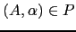

Sig: Eliminando la Recursividad por Sup: Análisis Descendente mediante Parsing Ant: PegJS en los Browser Con:
[~/srcPLgrado/pegjs-coffee-plugin/examples(master)]$ pwd -P /Users/casiano/local/src/javascript/PLgrado/pegjs-coffee-plugin/examples
[~/srcPLgrado/pegjs-coffee-plugin/examples(master)]$ git remote -v dignifiedquire git@github.com:Dignifiedquire/pegjs-coffee-plugin.git (fetch) dignifiedquire git@github.com:Dignifiedquire/pegjs-coffee-plugin.git (push) origin git@github.com:crguezl/pegjs-coffee-plugin.git (fetch) origin git@github.com:crguezl/pegjs-coffee-plugin.git (push)
Veamos un ejemplo de uso via la API:
[~/srcPLgrado/pegjs/examples(master)]$ cat plugin.coffee
#!/usr/bin/env coffee
PEG = require 'pegjs'
coffee = require 'pegjs-coffee-plugin'
grammar = """
a = 'hello' _ b { console.log 1; "hello world!" }
b = 'world' { console.log 2 }
_ = [ \t]+ { console.log 3 }
"""
parser = PEG.buildParser grammar, plugins: [coffee]
r = parser.parse "hello world"
console.log(r)
[~/srcPLgrado/pegjs/examples(master)]$ coffee plugin.coffee 3 2 1 hello world!
[~/srcPLgrado/pegjs-coffee-plugin/examples(master)]$ cat leftrec.jison
/*
Exercise: Find a PEG equivalent to the following left-recursive
grammar:
*/
%lex
%%
\s+ { /* skip whitespace */ }
y { return 'y';}
. { return 'x';}
/lex
%{
do_y = function(y) { console.log("A -> 'y' do_y("+y+")"); return y; }
do_x = function(a, x){ console.log("A -> A 'x' do_x("+a+", "+x+")"); return a+x; }
%}
%%
A : A 'x' { $$ = do_x($1, $2); }
| 'y' { $$ = do_y($1); }
;
[~/srcPLgrado/pegjs-coffee-plugin/examples(master)]$ jison leftrec.jison [~/srcPLgrado/pegjs-coffee-plugin/examples(master)]$ ls -ltr leftrec.j* -rw-r--r-- 1 casiano staff 441 18 mar 20:22 leftrec.jison -rw-r--r-- 1 casiano staff 20464 18 mar 20:34 leftrec.js
[~/srcPLgrado/pegjs-coffee-plugin/examples(master)]$ cat main_leftrec.js
var parser = require('./leftrec');
input = "y x x x";
var r = parser.parse(input);
[~/srcPLgrado/pegjs-coffee-plugin/examples(master)]$ node main_leftrec.js A -> 'y' do_y(y) A -> A 'x' do_x(y, x) A -> A 'x' do_x(yx, x) A -> A 'x' do_x(yxx, x)
Es posible modificar la gramática para eliminar la recursión por la izquierda. En este apartado nos limitaremos al caso de recursión por la izquierda directa. La generalización al caso de recursión por la izquierda no-directa se reduce a la iteración de la solución propuesta para el caso directo.
Consideremos una variable  con dos producciones:
donde
 no comienzan por .
Estas dos producciones pueden ser sustituidas por:
no comienzan por .
Estas dos producciones pueden ser sustituidas por:
eliminando así la recursión por la izquierda.
[~/pegjs-coffee-remove-left(master)]$ cat -n remove_left_recursive.pegjs
1 /*
2
3 Exercise: Find a PEG equivalent to the following left-recursive
4 grammar:
5
6 A : A 'x' { $$ = do_x($1, $2); } | 'y' { $$ = do_y($1); }
7
8 */
9
10 {
11 @do_y = (y) -> console.log("do_y(#{y})"); y
12 @do_x = (a, x)-> console.log("do_x(#{a}, #{x})"); a+x
13 }
14
15 A = y:'y' xs:('x'*)
16 {
17 a = @do_y(y)
18 for x in xs
19 a = @do_x(a, x)
20 a
21 }
[~/pegjs-coffee-remove-left(master)]$ pegjs --plugin pegjs-coffee-plugin remove_left_recursive.pegjs [~/pegjs-coffee-remove-left(master)]$ ls -ltr | tail -1 -rw-rw-r-- 1 casiano staff 8919 3 jun 10:42 remove_left_recursive.js
[~/pegjs-coffee-remove-left(master)]$ cat use_remove_left.coffee
PEG = require("./remove_left_recursive.js")
inputs = [
"yxx"
"y"
"yxxx"
]
for input in inputs
console.log("input = #{input}")
r = PEG.parse input
console.log("result = #{r}\n")
[~/pegjs-coffee-remove-left(master)]$ coffee use_remove_left.coffee input = yxx do_y(y) do_x(y, x) do_x(yx, x) result = yxx input = y do_y(y) result = y input = yxxx do_y(y) do_x(y, x) do_x(yx, x) do_x(yxx, x) result = yxxx